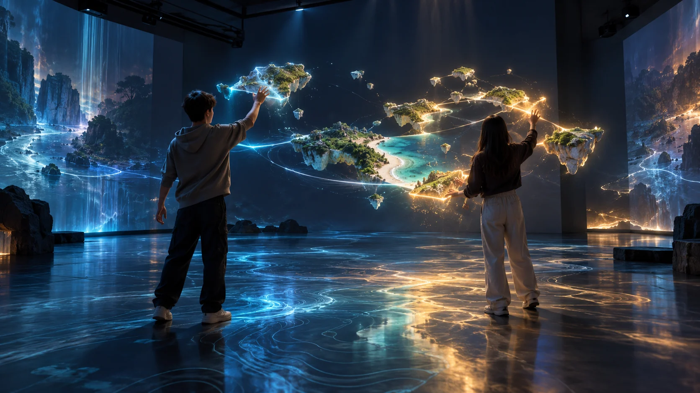
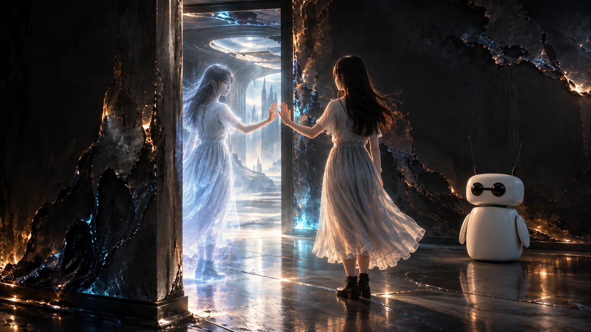
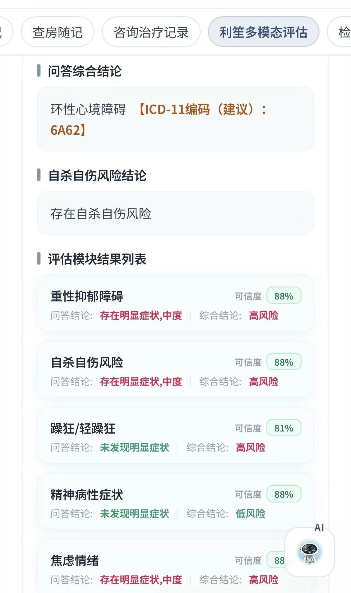
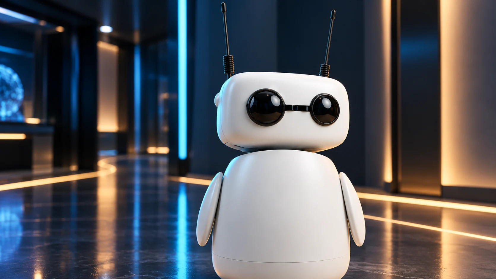
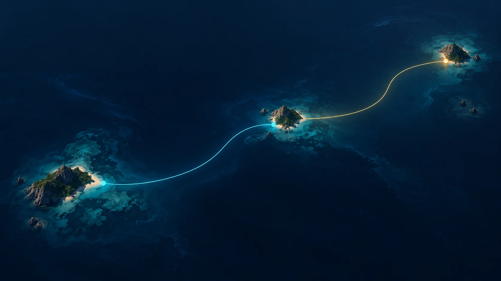
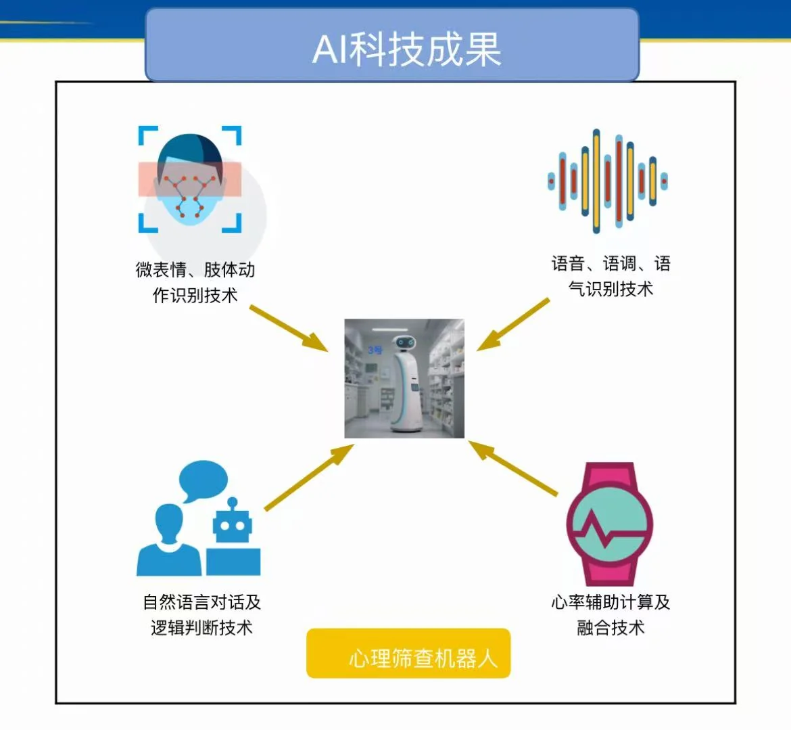

01 / 抵达
先知道自己为何而来。
入口展示利笙筛查、专业计划与陪伴产品。参与者建立自己认可的形象，共同确认本次练习方向与暂停方式。
已有产品负责识别、计划和连续支持；场景不会自行作诊断。为经专业评估适宜的青少年设计。把难以说清的感受，变成可以观察、练习与重新选择的沉浸场景。
开始了解这段体验 ↘筛查与专业评估帮助了解需要；AI 根据共同确认的目标生成场景；参与者在其中作选择，随后与专业人员回看，并把练习接回现实生活。
空间从真实场地的入口、长廊、开敞体验区，最终回到出口。世界可以变化，行走顺序与专业支持始终清楚。
入口展示利笙筛查、专业计划与陪伴产品。参与者建立自己认可的形象，共同确认本次练习方向与暂停方式。
已有产品负责识别、计划和连续支持；场景不会自行作诊断。同一个练习目标，可能成为潮汐、纸剧场或观星台。角色、回应与线索随选择变化；入口、出口和安全边界保持稳定。
从第 03 站开始生成。复访时先回看上次本人确认的内容，再开启新的航程。
共享区练习倾听、表达和确认；个人岛接住本人愿意回看的一个片段。场景把感受变成可观察的地形与角色，不给人贴标签。
对应叙事外化、行为排演和团体互动；个人空间可进入、退出或跳过。
镜中仍是入口的自己；可能的变化来自主动尝试，而非系统评定。随后在共创空间练习请求、表达边界或保留分歧。
镜映连接自我观察；共创把新的说法放回关系中试验。没有胜负或标准答案。
出口回看航行轨迹、主动选择和精彩瞬间。体验记录与正式评估分开；后续由本人和专业人员决定哪些内容进入随访。
报告记录过程，不把一次体验包装成疗效。复访看真实生活中的尝试、阻碍与变化。例如同样练习“把需要说清楚”，这次可能在潮汐边练习请求，下次在纸剧场练习拒绝。此前的痕迹是否出现，由本人确认。
潮水退去，露出一条可以说出请求的岸线。

利笙提供筛查线索，专业人员核验并制定方向；Copilot 协助整理目标；机器人与沉浸空间承载互动；陪伴产品与随访支持两次体验之间的回看。
VR、沉浸投影、裸眼 3D、可穿戴设备与舒缓空间按练习需要配置。设备是呈现和反馈手段，不能单凭设备存在推断疗效。

从入口起点，到本人确认的选择、精彩瞬间与下一次想尝试的方向。可修改，也可以不保存。
把自述、互动观察、量表与专业判断标明来源。风险提示和诊断建议须由临床人员复核。
画面和数据均为演示。叙事外化、行为排演、团体互动及测量反馈是设计依据；整个生成式方案的安全性、参与度与临床结局仍需分阶段验证。
团队围绕心理筛查机器人、多模态识别、数字化随访与家—医—校—社协同持续积累。筛查机器人二类医疗器械许可证的具体名称、注册号与适用范围以证书原件为准。
群岛整体方案将先验证安全性和可接受性，再观察技能使用、现实迁移及长期结局。此页展示建设方向，不宣称整体疗效已经证实。
医疗决策由合格专业人员作出。产品资质不等于沉浸体验整体疗效认证。
